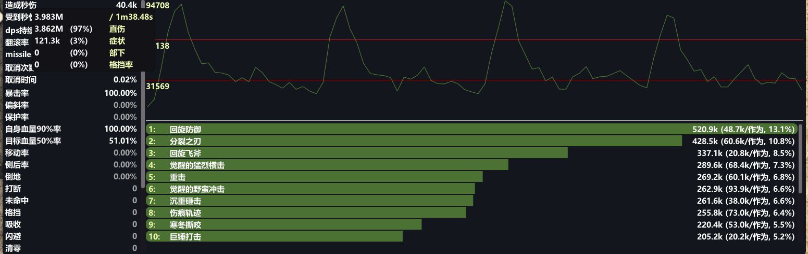
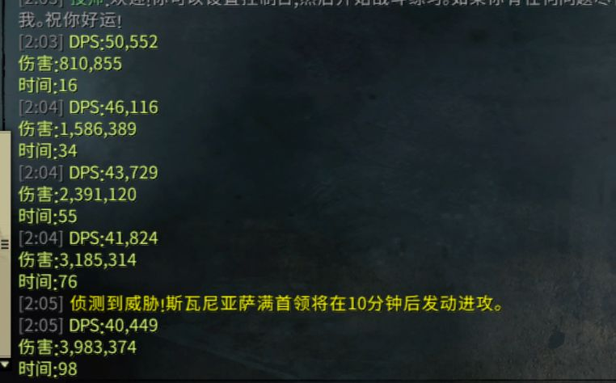
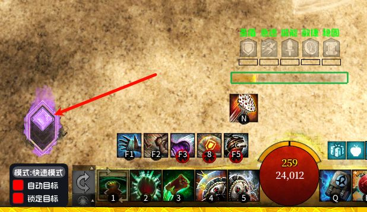
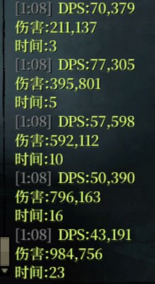
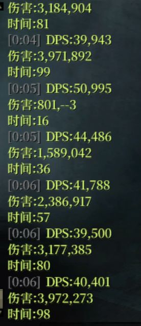

直伤魂兽-大锤双斧-2026.7-0灌40.5k
野兽形态，伤痕轨迹，寒冬撕咬，寒冬撕咬=1=重击，斧切锤v2=分裂之刃接切武器|觉醒的野蛮冲击=独狼之力，觉醒的野蛮冲击=冰霜陷阱，觉醒的野蛮冲击cd中十点半=冰霜陷阱，觉醒的野蛮冲击cd中十点半=独狼之力，大地冲击=干掉他们=专横碾压，冰霜陷阱=1=觉醒的野蛮冲击=干掉他们=大地冲击，冰霜陷阱=1=觉醒的野蛮冲击cd中十点半=干掉他们=大地冲击，冰霜陷阱黑=觉醒的野蛮冲击=干掉他们=大地冲击，冰霜陷阱黑=觉醒的野蛮冲击cd中十点半=干掉他们=大地冲击，大地冲击=1=锤切斧，干掉他们黑=觉醒的猛烈横击，觉醒的猛烈横击=1=专横碾压，干掉他们cd中3点黑=觉醒的猛烈横击cd中1点=锤切斧，伤痕轨迹，寒冬撕咬，寒冬撕咬=1=重击，寒冬撕咬cd中一点=重击，分裂之刃，伤痕轨迹cd中1点=切武器反=回旋防御，分裂之刃=3=斧切锤，干掉他们cd中七点半黑反=F1黑=武器2黑=寒冬撕咬cd中一点=伤痕轨迹cd中1点=伤痕轨迹cd中9点黑=斧切锤v2，F1黑=武器2黑=寒冬撕咬cd中一点=伤痕轨迹cd中1点=伤痕轨迹cd中9点黑=斧切锤，普攻||
野兽形态,b,5|伤痕轨迹,4,440|寒冬撕咬,3,430|重击,f1,560|斧切锤v2,`,200,2,360,5,5958,,,,,,,,,,,,,触发,0,,0,1|分裂之刃接切武器,2,550,`,200,2,360,5,5958,,,,,,,,,,,触发,0,,0,1|觉醒的野蛮冲击,4,500,,,,,,,,,,,,,,,,,触发,0,,1,,,11250|独狼之力,c,250,,,,,,,,,,,,,,,,,触发,0,,1|冰霜陷阱,z,580,,,,,,,,,,,,,,,,,触发,0,,1|觉醒的野蛮冲击cd中十点半|大地冲击,f3,490,e,140,4,500,2,500,,,,,,,,,,,触发,0,,1|干掉他们,e|专横碾压,3,920|冰霜陷阱黑|锤切斧,`,5,f1,560,4,440,3,430|干掉他们黑|觉醒的猛烈横击,2,450|干掉他们cd中3点黑|觉醒的猛烈横击cd中1点|寒冬撕咬cd中一点|分裂之刃,2,550|伤痕轨迹cd中1点|切武器反,,,,,,,,,ifnot|回旋防御,5,2678|斧切锤,`,5,4,500,2,360,5,958|干掉他们cd中七点半黑反,,,,,,,,,ifnot|F1黑|武器2黑|伤痕轨迹cd中9点黑|普攻,1
[&DQQeOSA/Nzp5AAAApQEAALUAAACsAQAALhYAACcAAAAAAAAAAAAAAAAAAAADWgAFADMAA2f3AADo9gAAm/YAAA==]
狂战，学者，大锤，双斧，武勇，冲击，克达。大锤起手也可以双斧起手
键位 F1 F2 F3 F4 B || 1 2 3 4 5 || Q E Z X C
软件版本 v1.78
评论列表（31）
大佬，我是新手，你写的我不是很懂，分裂之刃接切武器，是多点取色吗？如果你方便可以帮我取色一下吗？
锤5不放是怎么回事大佬
大佬能帮忙取下色吗 我怎么取都不对劲
大地冲击感觉放的很慢
@青枫 是不吃药40吗
@青枫 标准食物扳手
判定太多了 动一下就断轴
没有对比 不知道到底取对没有，有没有大佬给个优化版本~双斧魂兽非常赞！
v1.79版本最好把 斧切锤 的切武器延迟设成100，要不然容易放不出来锤4
@优雅之殇 循环少打一次锤2好像
觉醒的野蛮冲击cd中十点半，这个是取CD中的黑色吗？
@不落地的枫叶 斧2没放完，就切武器了。。。。只能打36K左右。
@不落地的枫叶 不是黑色。你等快cd结束了再取
大佬666，很强+16


大佬 ，斧5不放咋回事
@让天苛刻 伤痕轨迹cd中1点=切武器反=回旋防御，你看看哪个条件不满足。‘切武器反’，取的是能切武器的颜色，勾选了反色
https://www.bilibili.com/video/BV1dDKd6TEiu/?spm_id_from=333.1387.homepage.video_card.click&vd_source=c9b8c1a949f84f3250fbb87bc3570f80 这里有大佬的满桩视频可以参考（这个版本魂兽加强了，同样手法标灌能有43k）。
与满桩手法的区别：1.斧5后只平A了两下，满桩是3下。2.冰霜陷阱后没有放精英技能时，仍然安照大锤4->大锤2->F1 的顺序释放，满桩因为大锤4没有完全冷却完，提前放了F1。
此外如果要追求极限输出，还有操作小技巧：双斧第一次斧4最远距离释放，第二次中距离释放，可以延长克达的时间，提升一丁点的输出。
大家如果网速好，可以尝试修改优化。
如果发现技能释放顺序完全正确，伤害还是偏低，可以看看大锤2 和 斧2 有没有被切武器打断。
@优雅之殇 通过reffect插件，可以识别第三次啊普攻，是不是可以加入进循环。

@yaiba5530 理论上可以，现在主循环是通过“觉醒的野蛮冲击cd中十点半”来控制的。
带什么宠物
@小o 幼龄猪
干掉他们cd中七点半黑反=F1黑=武器2黑=寒冬撕咬cd中一点=伤痕轨迹cd中1点=伤痕轨迹cd中9点黑=斧切锤v2，F1黑=武器2黑=寒冬撕咬cd中一点=伤痕轨迹cd中1点=伤痕轨迹cd中9点黑=斧切锤，有图片解释吗？不知道怎么取色
@cc “cd中一点”字面意思就是取技能cd时候的1点位置（不能是纯黑色，不过这里需要取得极限一点，尽量靠近0点），这种取法相对于取“技能黑”的优势是，可以同时判断出在哪个武器下。带有“黑”字的就是取技能cd时候的纯黑区域，如果没有指定几点位置，默认就是取12点的极限位置。带有“反”字的表示勾选了反色模式
都取色成功了 最多打37 有时候断克达
@默 双斧的时候就是会断的 F1 吃不到
@优雅之殇 0灌 打了几次都是37左右 不知道怎么回事
@默 容易掉伤害的地方主要是切武器时不要卡掉之前的2技能，还有就是大锤的普攻要保证能打出第三下
@优雅之殇 这是100w的桩，差不多打一个循环，可以对比看看有没有漏技能

@优雅之殇 如何实现不打断普攻第三下啊，大佬。
@yaiba5530 觉醒的野蛮冲击cd中十点半 这个取色要精调一下。
正常网络不卡的话，应该是98s打完，如果网络不好，可能会是99 100
